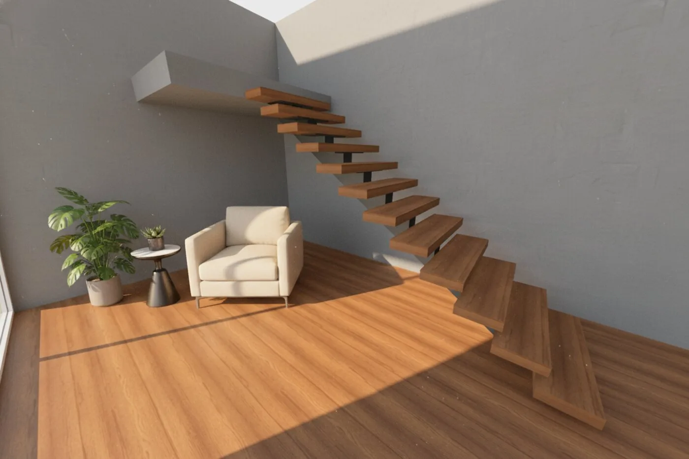
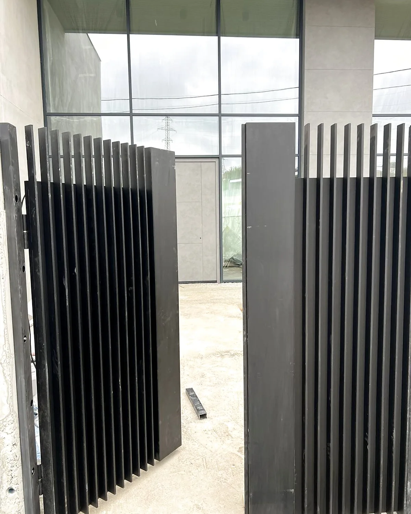
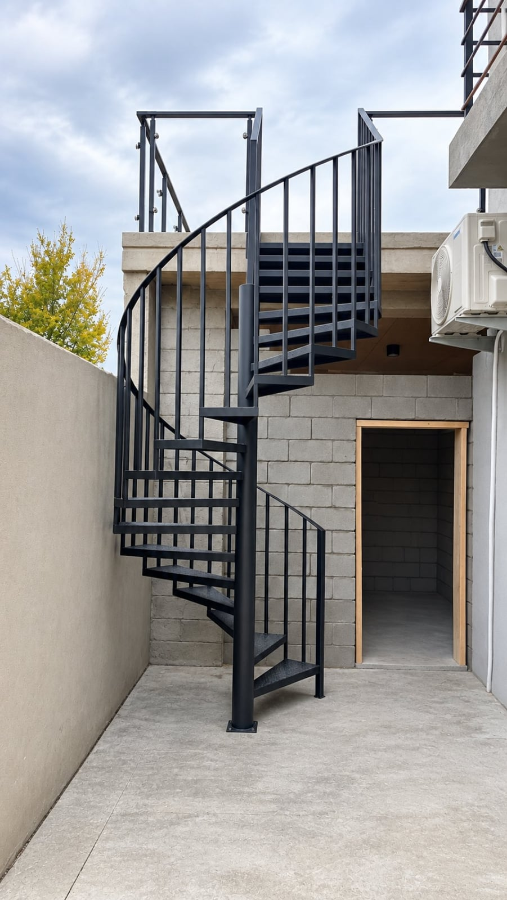

ლითონის
ნაკეთობათა
საამქრო
ჭიშკრებიდან და მოაჯირებიდან — ინდივიდუალურ ავეჯამდე. ვქმნით ლითონის ნაკეთობებს, რომლებიც ათწლეულებს გაძლებს.

ხარისხი, რომელიც ჩანს დეტალებში
ჩვენი სახელოსნო ამზადებს ლითონის ნაკეთობებს ხელით — ესკიზიდან საბოლოო მონტაჟამდე. თითოეული პროექტი განსხვავებულია, ამიტომ ვმუშაობთ თქვენს სივრცესთან და გემოვნებასთან ინდივიდუალურად და არა შაბლონებით.
მასალის ხარისხზე და შედუღების სისუფთავეზე ვაკეთებთ აქცენტს — შედეგი უნდა გაძლოს არა წლების, არამედ თაობების განმავლობაში.
რას ვთავაზობთ მომხმარებელს
ოთხი ძირითადი მიმართულება — ყველა უმაღლესი ხარისხით.

01 / 04საკუთარი დიზაინის ან თქვენი ესკიზის მიხედვით
ჯერ ვაპროექტებთ, შემდეგ ვამზადებთ
ყოველ ნაკეთობას ვაპროექტებთ 3D მოდელირებით, სანამ ლითონს დავჭრიდეთ. ვხედავთ ყველა დეტალს, ზომასა და შეერთებას წინასწარ — ამიტომ დამზადება და აწყობა ხდება მაღალი სიზუსტით, ადგილზე გადაკეთების გარეშე.

რჩეული ნამუშევრები
აირჩიეთ ნამუშევარი დეტალური აღწერის და მსგავსი პროექტების სანახავად.


როგორ ვმუშაობთ
კონსულტაცია
განვიხილავთ იდეას, ზომებს და ადგილს — ტელეფონით ან ადგილზე ვიზიტით.
დიზაინი და შეთანხმება
ვამზადებთ ესკიზს და ფასს, ვათანხმებთ ყოველ დეტალს დამზადებამდე.
დამზადება სახელოსნოში
ხელით შედუღება და დამუშავება — ხარისხის კონტროლით ყოველ ეტაპზე.
მონტაჟი
მზა ნაკეთობის ტრანსპორტირება და დამონტაჟება ადგილზე.
მზად ხართ დაწყებისთვის?
დაგვირეკეთ და მოკლედ აღწერეთ თქვენი იდეა — დანარჩენს ერთად გავარკვევთ.